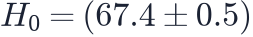
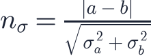
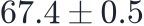

In this lesson you will learn
|
Everything was a paper first
The Hubble constant, the acoustic peaks, the neutrino mass limit, the S8 tension — every number in this course was announced in a scientific paper. Almost all of them appeared first on arXiv, the free preprint server where physicists post their work, often months before a journal publishes it. Anyone can read them. The trick is knowing how.
A cosmology paper is not written to be read from the first word to the last. It is a reference document with a predictable layout, and experienced readers jump around it.
The anatomy of a paper
| Section | What it is for | What to look for |
|---|---|---|
| Abstract | The claim, in 200 words | The headline numbers with their errors |
| Introduction | Why it matters, what was known | The one sentence saying what is new |
| Data | What was observed, how much | Sky area, number of objects, redshift range |
| Method | How the data became a measurement | The model, the priors, the likelihood |
| Systematics | What could fake the result | Tests that split the data, and what survived |
| Results | Tables and contour plots | The main table, the main figure |
| Discussion | What it means, what it does not | Comparisons with other experiments, caveats |
Large collaborations such as Planck, DES or DESI split a result over many papers: one for the data, one for each probe, one "cosmological constraints" paper that combines them. The combined paper is usually the one with the headline — and it cites the others for everything that could go wrong.
Three passes
A good way to read, adapted from a well-known guide by the computer scientist Srinivasan Keshav:
- Five minutes. Title, abstract, the section headings, the main figure and the conclusions. At the end you should be able to say in one sentence what was measured and what came out. Most papers stop here, and that is fine.
- An hour. Read the introduction, the data section and the results properly. Look at every figure and read its caption — captions are written to stand alone. Mark what you do not understand but do not stop for it.
- As long as it takes. Only for a paper you need: follow the method, check the systematics tests, compare with the papers it cites. At this level you are trying to rebuild the result in your head, and to find where you would have done it differently.
Start with the figure In cosmology the main figure is the result: a Hubble diagram, a power spectrum, a contour plot. If you can read that one picture (L7.1), you have understood most of the paper. |
Decoding an abstract
Here is the kind of sentence you will meet, taken from the Planck 2018 results:
From an abstract We find a Hubble constant  |
Unless the paper says otherwise, "±" is a 68% interval: one standard deviation for a Gaussian posterior. The true value lies outside it about a third of the time. Other phrases have fixed meanings too:
- "95% upper limit", as in eV: the data are consistent with zero, and this is the value excluded at 95% confidence (L4.7).
- "consistent with" means within about two standard deviations. It does not mean "equal to".
- "in 3σ tension" means two measurements differ by three times their combined error (L7.2). Tension is between measurements, not between a measurement and the truth.
- "a preference for" or "a hint of" usually signals something between 2σ and 3σ. "Evidence" is often used around 3σ, and "detection" is reserved for 5σ.
Adding up a tension Two independent measurements and differ by  standard deviations. For SH0ES () against Planck (  ) that is — the Hubble tension of L6.6. |
Reading a parameter table
The results section usually holds a table: one column per combination of data, one row per parameter. Three things are easy to miss.
- Which data. "Planck TT,TE,EE+lowE+lensing+BAO" and "Planck TT" give different numbers. When two papers disagree, check first whether they used the same combination.
- Which parameters were fitted and which were derived.
 is often derived from
the angle of the acoustic peaks and the densities, not fitted directly. A derived
parameter inherits every assumption of the model — here, ΛCDM.
is often derived from
the angle of the acoustic peaks and the densities, not fitted directly. A derived
parameter inherits every assumption of the model — here, ΛCDM. - Which model. A table for ΛCDM and a table for "ΛCDM + " are different measurements. Freeing a parameter almost always widens the errors on the others.
Reading the triangle plot
The figure every constraint paper contains is the triangle plot (or corner plot): the MCMC chain of L7.3 displayed as all its two-parameter slices.
- Along the diagonal, each panel is the posterior of one parameter, with all the others marginalised over.
- Below the diagonal, each panel shows two parameters with 68% and 95% contours: the darker inner region holds 68% of the probability.
- A tilted, cigar-shaped contour is a degeneracy: the data
constrain a combination of the two parameters well, and each one separately badly. The
combination is often what the paper quotes —
 exists
for exactly this reason.
exists
for exactly this reason. - When several data sets are overlaid, look at where their contours overlap. Combining data is only honest when they do.
Try it: Likelihood & MCMC Explorer Fit a model, then look at the contours. Add the second probe and watch a long, tilted degeneracy shrink to a small ellipse where the two overlap. |
Before you believe it
A result that would change the textbook deserves a few questions. None of them is an accusation; they are what the authors' own referees ask.
- How many σ, and after what? A 3σ effect found after trying twenty ways of cutting the data is much weaker than it looks. This is the look-elsewhere effect.
- Was the analysis blinded? Modern surveys hide the answer from themselves until every choice is frozen, so that nobody can steer towards the expected number without meaning to.
- Does it survive the systematics tests? Split by sky region, by redshift, by instrument. A real signal is the same in every half; a systematic usually is not (L7.6).
- Does it depend on one data set? The DESI 2024 preference for evolving dark energy ranged from 2.5σ to 3.9σ depending on which supernova sample was included. That spread is itself information.
- Has anyone else seen it? The DAMA annual modulation (L3.6) has been significant for twenty years in one experiment and absent in every other.
- Can you check it? Many collaborations now publish their chains, likelihoods and code. A result you can rerun is worth more than one you have to take on trust.
Peer review is a filter, not a guarantee A published paper has been read critically by one or two experts, which catches many mistakes but not all. A preprint has not yet been. Neither is the final word: that comes when independent teams, with different instruments and different systematics, find the same number. |
How the field argues When the 1998 supernova papers claimed that the expansion was accelerating (L3.3), two independent teams had reached the same answer with different data and different methods. That, more than any single σ, is why the community accepted a result that almost nobody had expected. |
Remember this
|